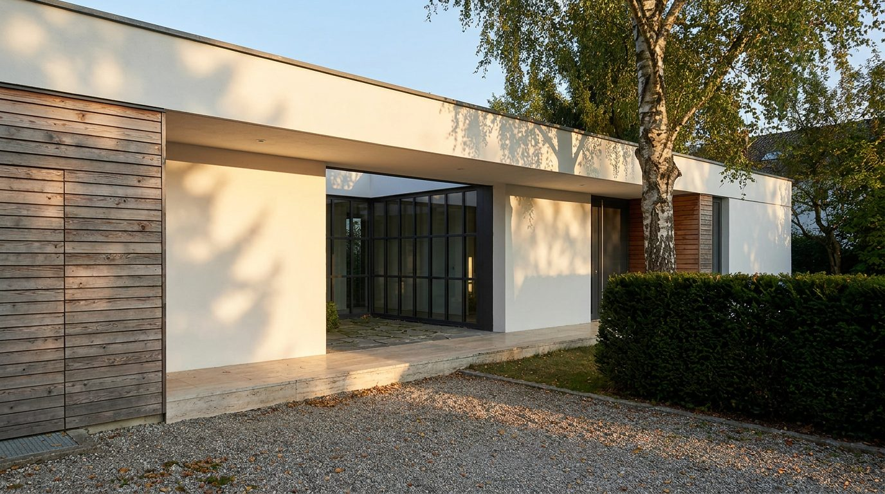
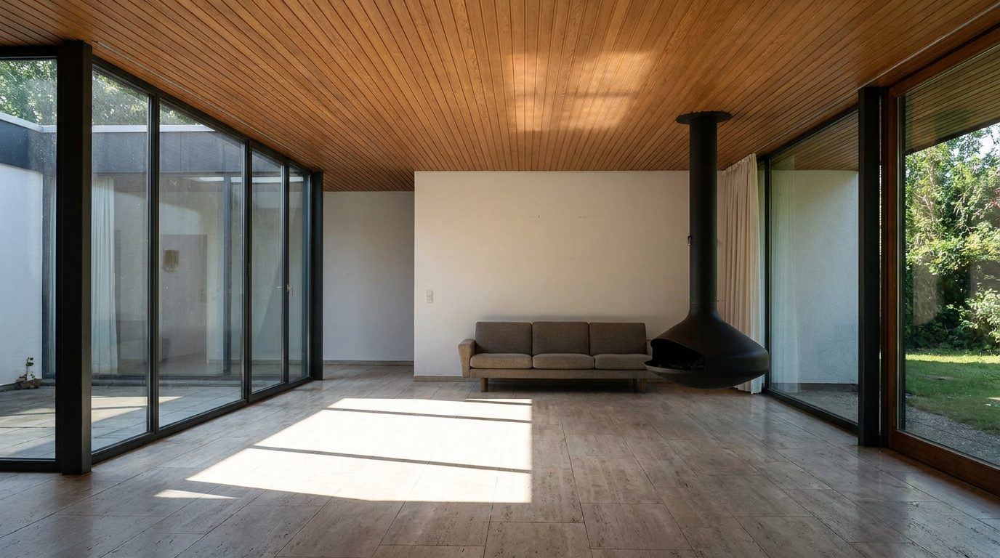

Atlante · INT-DE-02 · Germania · Europa
Bungalow tedesco-occidentale anni '60, legno, vetro e patio interno
Esempi · esterno e interno


Perché funziona
La Germania ovest degli anni Sessanta ha prodotto una casa unifamiliare che è insieme borghese e radicale: tetto piano, vetro a tutta altezza, atrio interno, legno sul plafone e travertino a terra. Al catalogo serve perché è l'unico ambiente tedesco dove il prodotto sta davanti al giardino invece che a uno stucco, e regge due registri: quiet se parlano legno e pietra, loud se un blocco di colore pieno entra sul travertino. Il made in Italy entra come geometria: divani bassi, tavoli monolitici, tessuti che il vetro non sbiadisce. Non deve diventare la casa da architetto con arredi firmati: niente sedie icona, niente piante da serra. Il mobile deve solo abitare la luce.
Architettura · elementi riproducibili
- plafone 2600 mm in pino con listelli 20 x 90 mm, passo 45 mm, verniciatura opaca
- vetrata a tutta altezza 3600 x 2600 mm su patio interno, profilo in acciaio 45 mm
- patio interno 6000 x 8000 mm, pavimento in travertino 600 x 1200 mm, bordo 400 mm
- tetto piano con aggetto 900 mm e pluviale nascosto nel pilastro 300 x 300 mm
- parete in vetro a due strati 2400 x 2600 mm verso il giardino, soglia a filo 20 mm
- camino sospeso in lamiera 1400 x 500 mm, canna in acciaio verniciato nero
- un divano basso 2400 mm in lana grezza e un tavolo in legno 1800 mm: nessun altro arredo
Fatto verificato: in Germania il bungalow come forma dell'abitare visse il suo periodo di massimo sviluppo negli anni Sessanta, spesso come bungalow di lusso, di frequente a L con tetto piano o a padiglione; esempio eminente è il Kanzlerbungalow disegnato da Sep Ruf nel 1963 a Bonn.
Fatto verificato: il Kanzlerbungalow, usato dal 1964 al 1999, ha pavimenti e terrazze in travertino e plafoni in pino brasiliano, ed è composto da due quadrati con due atri interni.
Fatto verificato: Sep Ruf (Monaco 1908-1982), architetto vicino al Bauhaus, costruì nel 1963-64 a Bonn la casa del cancelliere: tetto piano, grandi vetrate, due quadrati con due atri, in un parco presso il Reno.
Valutazione: la direzione 'Stoccarda o Monaco' non offre un edificio anni '60 verificabile in enciclopedia, quindi la voce resta ancorata al tipo documentato, il bungalow tedesco-occidentale, e usa il Kanzlerbungalow come paradigma dichiarato; Monaco e Stoccarda restano il mercato di riferimento.
Luce
Prompt di generazione (EN)
Interior photograph of a 1960s West German modernist bungalow living room, 2.6 m flat ceiling in Brazilian pine battens 20 x 90 mm, travertine floor slabs 600 x 1200 mm brushed, full-height 3600 x 2600 mm steel-framed glazing onto an internal patio, one 2400 x 2600 mm glass wall to the garden, a suspended black steel fireplace 1400 mm. One low 2400 mm wool sofa is the only furniture. Single key light from the patio glazing on camera left, low sun at 20 degrees, 4950 K, a hard-edged light rectangle on the travertine and soft reflected light on the pine soffit, no lamps, neutral white balance. 28 mm lens at 1.20 m, two-point perspective, verticals parallel, restrained mid-century grade with warm stone and cool glass, no people, no text, no logos.